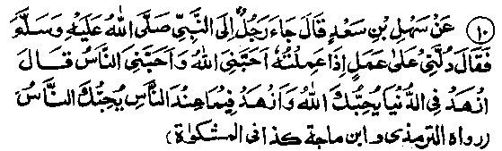
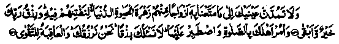
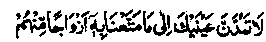
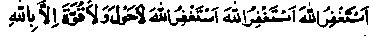
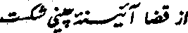
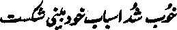

Chapter Six · Section (d): Ahadith on the foregoing subjects (concerning the excellence of Tawakkul)
Hadith 10

A Sahabi Radhiallaho anho came to Rasulullah Sallallaho alaihe wasallam and said, "Direct me to an act of virtue, after performing which, I should be loved both by Allah Ta'ala and His men". He replied, "If you renounce this world, Allah Ta'ala will love you; and if you abstain from desiring what people possess,they will love you".
In the foregoing pages, we have quoted a number of Ahadith to the effect that Allah Ta'ala loves those who practise abstinence in this world and that, in the Akhirah, they will be raised to positions of honour. This Hadith, in addition, lays down that, as a rule, he who does not regard others’ wealth enviously, nor feels greedy for it, can command their love and veneration. Everybody can verify this from his own experience. It is a common observation that some people have the most intimate mutual relations but, as soon as one of them asks something from the others, the relations are affected and the respect for each other vanishes from their hearts. It has been related in a Hadith that once Jibra’el Alaihissalam came to Rasulullah Sallallaho alaihe wasallam and said, ‘O Muhammad, however long you may live, death must inevitably come to you; and whatever deed (good or bad) you perform you will receive for it an equal recompense; and with whomsoever you develop your relations (in the world), you will be disunited and separated from him one day (i.e. either he will die and forsake you, or you will die and forsake him). Take heed; the nobility of a person consists in his observance of Tahajjud Salaat and his respect depends on a sublime in disregard for what others possess”. (Targheeb). That is to say, a person commands the respect of others so long as he does not regard others’
wealth enviously. But as soon as he becomes envious, all his honour and prestige is lost.
Urwah Rahmatullah alaihe says, "When anyone of you looks at the beauty and adornment of this world (and is fascinated by it), he should go home at once and ask his family members to stand in prayers (Salaat). For, Allah Ta'ala has commanded His Rasul Sallallaho alaihe wasallam in the Holy Qur’an:

"And strain not your eyes in longing for that We have given to the people inducing in the world to enjoy, the splendour of the life of this world, so that We may try them thereby. The provision of your Lord (Promised to be given in the Akhirah) is better and more enduring. And enjoin Salaat upon your people (relations) and be constant therein". (Taha: 131-132)
And, in another context, Allah Ta'ala says:

And strain not your eyes in longing for what We have bestowed upon certain people among them to enjoy (i.e. the beauty and adornment of the world)". (al-Hijr: 88)
Commenting on these Ayaat,Sufyaan Ibne ‘Uyainah Rahmatullah alaihe says, "If a person who has been favoured with the knowledge of the Qur’an, looks enviously towards anything of the world (granted to someone else) he belittles the Holy Qur’an (i.e is showing disrespect to the Holy Qur’an)."
Imaam Ghazaali Rahmatullah alaihe says: Poverty is commendable indeed, but only for him,who possesses a contented mind, does not feel greedy for wealth, takes no thought of what other people possess and has no desire to acquire property. And all of these qualities can only be achieved by a person who is frugal in his expenditure, spends on his food, dress and lodging only as much as is absolutely necessary, within the humblest possible means. If he requires something, he provides himself with as much of it as may suffice him, at the most for a month, never giving thought to what he may possibly require after the month. For, he who thinks beforehand of what he may possibly need after a month,is deprived of the honour of contentment and falls a prey to greed and avarice. And greed (for man is greedy by nature) makes him addicted to bad habits and induces him to indulge in forbidden things. Rasulullah Sallallaho alaihe wasallam once said, "If man were to possess two ‘Wadis’ (valleys) full of gold, he would desire a third".
Abu Musaa Ash'ari Radhiallaho anho says, "A surah equal, in extent to surah ‘al-Bara‘at’ was revealed to Rasulullah Sallallaho alaihe wasallam, which was abrogated later. I still remember the following out of its contents: “Sometimes Allah Ta‘ala assists this Deen (Islam) through the people who have no concern with it (non believers and evil doers.); and also, if man were to possess wealth’to the extent of two Wadis (valleys) full of gold, he would crave for a third, for nothing can fill the belly of a man (satisfy his greed) but the dust of the grave; but he who turns to Allah in repentance, Allah Ta'ala accepts his repentance".
Rasulullah Sallallaho alaihe wasallam once said, "Two greedy persons are never satisfied: the man of learning who is greedy for knowledge (when a man las acquired a taste for knowledge, he is never satisfied but always craves for more) and the man who is greedy for money". Since greed is a fatal malady, which man has in his nature, Allah Ta'ala and His Rasul have repeatedly emphasized the importance of contentment. In a Hadith, Rasulullah Sallallaho alaihe wasallam has been reported as saying; “Blessed is the man whom Allah Ta'ala has favoured with Islam, and provided him with a bare sustenance, with which he is content"
It occurs in another Hadith that once Rasulullah Sallallaho alaihe wasallam said, "On the Day of Resurrection, everybody, rich or poor, will wish he had been given just as much provision in the world as barely sufficed for his needs". For the same reason, Rasulullah Sallallaho alaihe wasallam has admonished us against greediness and against exerting much for earning money.
Rasulullah Sallallaho alaihe wasallam once said; "O people, adopt good means for earning (i.e. do not adopt unlawful means). For, nobody can get more than what has been apportioned for him which must reach him inevitably; and no man will die until he has received the entire amount of his provision". Rasulullah Sallallaho alaihe wasallam also said,"If you observe Taqwa (i.e. guard yourself against all forbidden things), you will be the most devout of men; if you are content with your provision, you will be the best of those who are thankful to their Lord; and if you like your brother Muslim to have what you like for yourself, you will be a perfect Mo’min”.
Abu Ayyub Radhiallaho anho says that a person came to Rasulullah Sallallaho alaihe wasallam and said, "O Rasulullah, give me some brief advice (so that I may hold fast to it)". Rasulullah Sallallaho alaihe wasallam said: "When you perform Salaat, do so as though it were your last (when a man thinks a Salaat to be his last, he will obviously perform it with great sincerity and devotion and will take pains to make it perfect); and do not speak a word for which you will have to express regret (and tender an apology); and, with a firm mind, do not desire to get what other people possess(do not even turn your eyes to what men possess)”
Umar Radhiallaho anho says, "Greediness is poverty (and makes one needy) and true riches consists in not coveting what others possess". That is, he who gives up all hopes of what other men possess, becomes independent of them. A sage was asked, "What is wealth?’And he answered, "Restriction of hopes and being content with what suffices for one’s needs. Muhammad bin Waasay Rahmatullah alaihe used to eat dry bread soaked in water and say: "He who is content to eat this is never obliged to depend upon anyone’. Some asked a sage, 'What are your possessions?" He replied, Wearing an expression of self-sufficiency in public, restriction of hopes and moderation in private; and entertaining no hopes of what others possess".
According to a Hadith Rasulullah Sallallaho alaihe wasallam has informed us that Allah Ta'ala says: "O son of Adam! If you were to possess the whole world, you would not be able to eat more than what can satisfy your need. So, count it My favour to you that I did not grant you more than what suffices for yourt needs, so that you may not have to answer for it".
Abdullah bin Mas'ood Radhiallaho anho says: "If anyone asks a brother to help him in his need, let him express his desire in plain words. For, if you eulogize him widely, you will do him great harm (make him proud) while you will not get more than your portion allotted by Divine Decree".
It is related that the Umayyid king Sulaiman Ibne Abdul Malik wrote a letter to Abu Hazim Rahmatullah alaihe in which he requested, most earnestly, that the Sheikh should ask anything he needed at any time, from the king, who would be pleased to provide it for him. The Sheikh replied, T put all my needs before Allah Ta'ala and I am content with what He has granted me for their fulfilment"..
A sage has said, “I never saw anyone in greater sorrow than the jealous person, nor anyone leading a happier life than a contented person, nor anyone more patient than the greedy man (he is greedy for almost every thing, which he cannot achieve and, therefore, he has to exercise patience). And I never saw anyone leading a finer and more peaceful life than the person who has renounced the world, nor anyone more regretful than an Alim (scholar of divinity) who transgresses the limits of propriety.'
It is said that once Abdullah Ibne Salaam Radhiallaho anho asked Ka'b Ahbaar Radhiallaho anho, "What causes knowledge to be taken away from the hearts of the Ulama (divines), despite their having gained a proper understanding of it and having retained it in their minds?" Ka'b Radhiallaho anho replied, "Greed, and asking favours from people".
Someone asked Fudhail-bin-Ayaadh Rahmatullah alaihe to explain the above mentioned remark by Ka'b Radhiallaho anho. He said, "When an ‘Alim (Divine) becomes greedy for a worldly thing, he exerts his powers for achieving it and, thus, seriously harms his ‘Deen’ (religion). That is to say, he occupies himself with worldly cares at the expense of religious pursuits. Before long, his covetous nature is fascinated by each and everything of the world and he desires to possess all the things that catch his eye. Then he asks favours from men and bows to anyone who helps him in the fulfilment of his desires, obeys him, serves his designs humbly, salutes him when he passes by and visits him when he falls ill. And these salutations and visits are not motivated by the desire to please Allah Ta'ala, but by worldly designs. (For which, obviously, no reward is to be expected in the Hereafter).”In the end, Fudhail Rahmatullah alaihe said, "This remark is of greater benefit than a hundred others, as it is a good exhortation to practise contentment".
Sa'd bin Abi Waqaas Radhiallaho anho says that a person came to Rasulullah Sallallaho alaihe wasallam and said,"O Rasulullah, give me some advice and make it brief (so that I may hold fast to it)' Rasulullah Sallallaho alaihe wasallam said, "Give up all hopes of getting what other people possess (do not even turn your eyes to what men possess), and ward off greed, for greediness is instant poverty (when you are greedy and want to have a thing, you become needy even before the need actually arises); and do not do or say a thing for which you will have to make an excuse tomorrow". (Targheeb)
We have earlier quoted a Hadith, on the authority of Abu Ayyub Radhiallaho anho, in which the same question with a similar answer has been reported. Both Traditions have a common theme, except for a piece of advice in each, specifically meant for the person asking the question in each case and, therefore, at variance with the other. Some versions of Sa'd’s Tradition mention four items of advice (like the one given above), of which three items are similar to those mentioned in Abu Ayyub’s version,and there is one more regarding greediness. (Targheeb)
As regard the advice to give up hopes of what others possess, which is common to both Traditions, this is very important indeed. For, only such people (who do not hope to get anything from others) are safe from anxiety and humiliation before others. Another Hadith reports Rasulullah Sallallaho alaihe wasallam as saying, "If anyone is living at. peace in his house, has been granted bodily health by Allah Ta'ala and possesses enough food for the day, it is as if he possesses the whole world’. (Targheeb). True, if anyone possesses all these things, he has no reason to regard enviously any other thing of the world.
Abdullah Ibne Umar Radhiallaho anho has also narrated a similar incident about a person who asked Rasulullah Sallallaho alaihe wasallam for some brief advice, He replied, "When you observe Salaat, observe it as though it were your last (and you were standing before Allah Ta'ala)-, for, He sees you, though you do not see Him; and give up all hopes of what others possess, you will be the richest of men;and do not do or say anything for which you will have to make excuses tomorrow". (Targheeb)
It is related that someone asked Sa‘d Radhiallaho anho to give him some advice and he said, "When you get up to observe Salaat, perform the ‘Wudhu’ (ablution) perfectly, for Salaat without ‘Wudhu’ is not accepted, and there is no faith (Imaan) without Salaat; then, when you begin to observe Salaat, observe it as though it were your last; and do not make frequent demands, foil it is instant poverty; and give up all hopes of what other people possess, for, true riches consists therein; and do not do or say anything for which you will have to make excuses and apologize tomorrow”. (Athaaf-us-Salaat)
Imaam Ghazali Rahmatullah alaihe says, "Some people think that he who renounces worldly wealth is an ascetic (Zaahid); though it is not true. For, it is quite easy for any one,who hankers after public fame, status and prestige,to eat less food and to wear rough and coarse clothes. There are many pretenders to asceticism and renunciation (zuhd) who are content to eat little food and who keep their house-doors closed to the public or live in houses which have no entrance gates (i.e. refuse to associate with people). And by all this, they aim to achieve nothing but worldly fame. There are many who wear fine clothes and claim to have renounced the world (become Zaahids). They say that they wear fine clothes in order to follow the Sunnah of Rasulullah Sallallaho alaihe wasallam. They also say that they do not wear fine dress of their own accord, but because their friends and admirers insist on it and wish to see them well-dressed. The fact is that, when they say so, they are indirectly asking people to send them gifts of fine garments. These two categories of people want to gain worldly benefits through their religion. For, worldly benefits do not consist in acquisition of wealth alone; desiring the high status and good name of an ascetic (Zaahid) is also a worldly motive. There are three distinguishing characteristics of a true ‘Zaahid’ (an ascetic), which one should try to develop in himself:- 1. He does not take pleasure in what he possesses in the world; nor grieves over being deprived of the things he does not possess. Or, better still, he grieves over having worldly things in his possession and feels happy when he is bereft of such things.
2. In his sight, the one who praises him and the one who berates him are alike. Of these two, the former characteristic signify renunciation of wealth, the latter signifies renunciation of status and worldly renown.
3. He is possessed of a true love for Allah Ta’ala, enjoys intimacy with Him, and is capable of experiencing a peculiar bliss and sweetness in acts of devotion. (Ihya)
At this point, I would like to narrate two anecdotes from the lives of my own spiritual leaders, which serve as illustration of the perfections listed above.
First, I quote here a letter by our spiritual mentor and guide, Maulana Rashid Ahmad Gangohi Rahmatullah alaihe, written to his own spiritual leader, Sheikh of the Arab and the non-Arab world, Haji Imdaadullah Rahmatullah alaihe; May Allah raise him to still higher spiritual stations! It reads:- "Your honour has deigned to ask this undeserving servant of yours about his spiritual condition. O,you, who are my protecting lord in the two worlds! What am I and what is my spiritual state! What good have I got to present to you who have reached the zenith of perfection! By Allah! I am ashamed to talk to you about my own humble attainments, because I am the most insignificant of your servants. But since you have commanded me I must comply with your behest.
"My esteemed preceptor and guide, so. far as the externals of (religious) knowledge are concerned, during the seven years of my absence from your blessed companionship, more than two hundred students have received their final degree of proficiency in Hadith through this humble servant of yours. Most of these have opened their own institutions for teaching of Hadith and have devoted themselves to the revival of Sunnah of the ‘Rasul Sallallaho alaihe wasallam and propagation of ‘Deen’ (Islam). I deem it to be the greatest honour, if it meets with acceptance by Allah Ta’ala.
"As for the fruits of inner perfections gleaned from my spiritual association with and service of your august self, I should add in brief: In my moods of divine ecstasy, I take no thought of receiving any benefit, or coming to harm through anyone other than Allah Ta’ala. So much so that, by Allah, I sometimes fear I have been detached from my own spiritual leaders. And I am least concerned with the praise or blame of anyone, considering my spiritual state to be far removed from praise or dispraise of people. And I abhor the sins and feel inclined by nature towards devotions,and I owe all these effects to the illuminating benedictions of my association and spiritual link, at once imperceptible and asserting, which binds me to your illustrious self. It would be impudent and audacious of me to dilate further on this subject I, therefore, request to be excused.
"Pardon me, O Allah! I have written this in compliance with the behest of my sheikh. I am a false pretender, the most insignificant of Your creatures. All these are Your favours to me. Only You exist What am I? A nonentity! I owe my very existence to You! I am because You will to be so. To think in terms of You and T is also an intricate way of ascribing partners to You in Your Attributes.

I seek refuge in Allah! I seek refuge in Allah! There is no might and no power except in Allah.
Kindly accept this from me with my excuses. Was-Salaam. 1306 A.H".
This letter was written seventeen years before the Sheikh passed away to the vicinity of Allah; one cannot imagine the spiritual heights which he might have attained after this period, considering that he felt beyond the praise or dispraise of people and that he did not even think of receiving any benefit or coming to harm through anyone except Allah, long before his death..
The other incident has been narrated by Amir Shah Khan in his book ‘Ameer-ur-Riwayaat’. He writes, In Sikandarabad sub-division, there is a village,which is called Hasanpur. I have also visited it. It is quite a large village-author). There was a time when this village used to be an estate owned jointly by Maulana Mohammad Ishaaque of Delhi (who was a well-known authority on Hadith) and Maulana Muhammad Yaqoob Rahmatullah alaihima. Maulana Muzaffar Hussain Kandhalwi says that these two brothers were very generous by nature and spent liberally. The consequence was that they seldom remained in easy circumstances and often looked worried.
It so chanced that, one day when they were living in Makkah Mukarramah, Maulana Muzaffar Hussain visited theta at their house and was greatly surprised to see them unusually happy. They walked about in the house, carried books from one place to the other and talked to each other in very happy tones like people who cannot contain themselves for joy. Maulana Muzaffar conjectured that some large remittance from India might have occasioned this unusual mood of felicity, but he, thought it worth while to learn the real cause. As he could not muster courage to ask the elder brother, he said to the younger, "Maulana 1 How is it that you look so happy today?" He replied, "Our estate at Hasanpur has been confiscated. We are happy because, so long as it remained in our possession, we did not have perfect trust (Tawakkul) in Allah Ta'ala; from now on, we shall put our trust in Allah alone".
Maulana Ashraf Ali Thanawai Rahmatullah alaihe, commenting on this incident, writes: "The incident is reminiscent of another similar anecdote from the life of Sheikh Abdul Qaadir Jilaani Rahmatullah alaihe who expressed great joy on being told, by one of his attendants, that his costly mirror had broken. The attendant said, timidly;

The China-made mirror has broken by chance,
But the Sheikh added a rhyming line, quite extempore: ‘

"It's good! The means of looking at ourselves (with pride) have been shattered ".